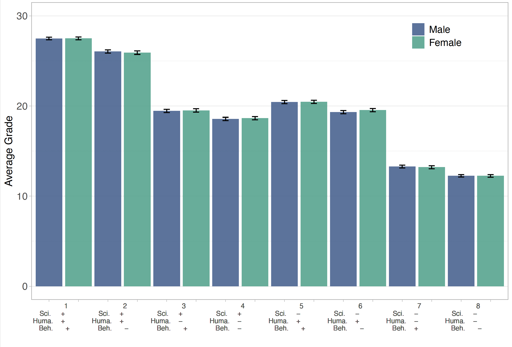
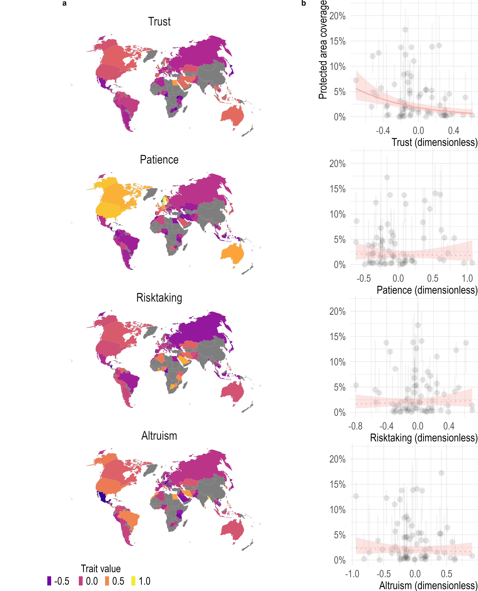
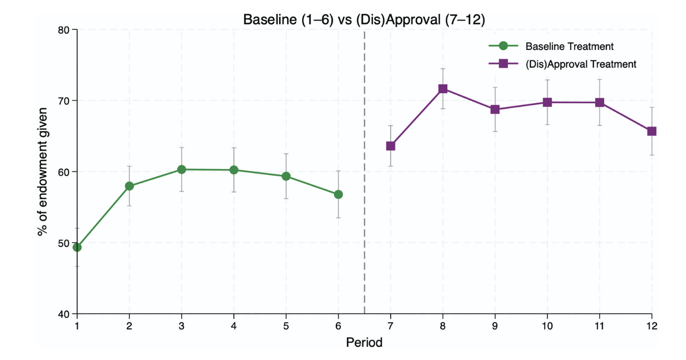
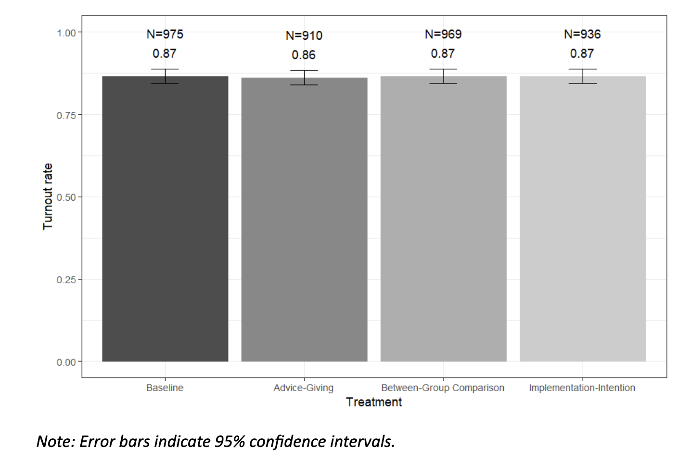
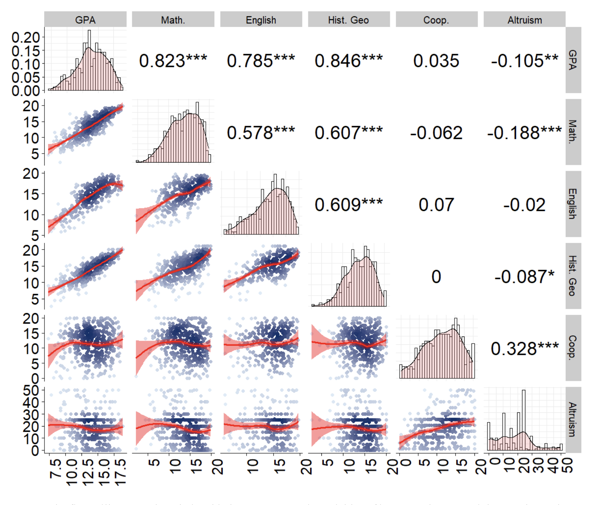
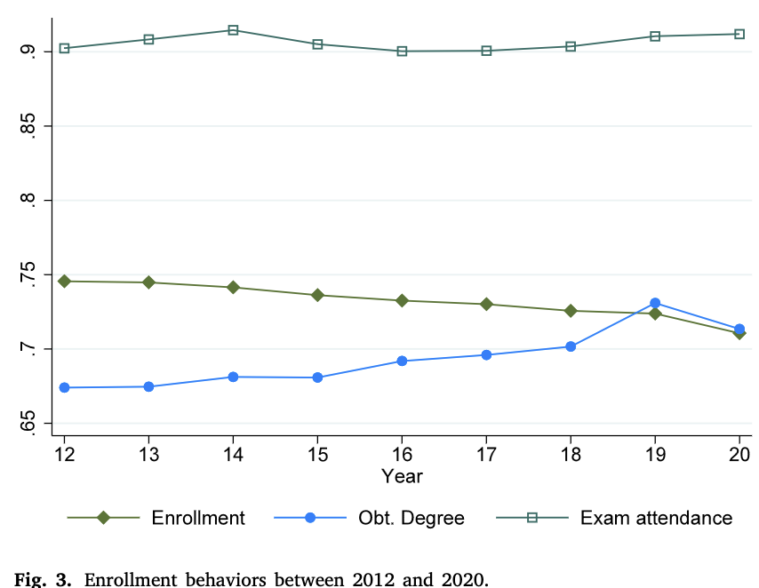
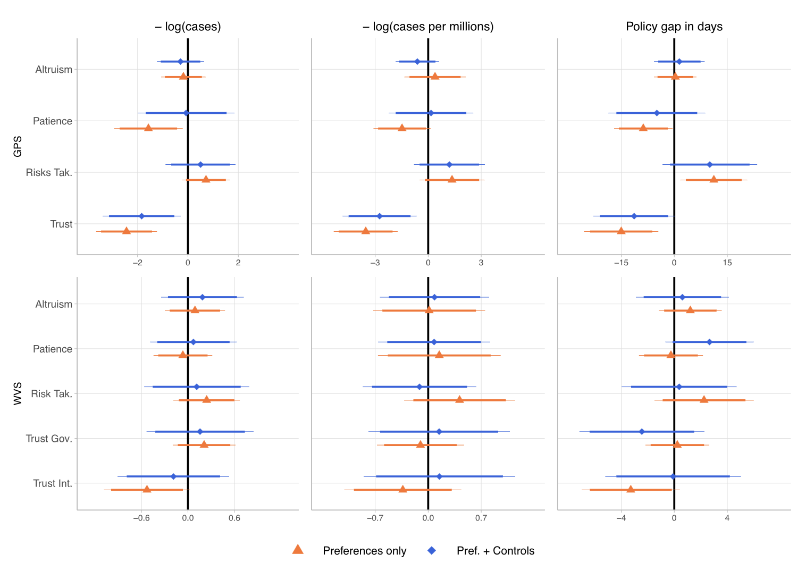
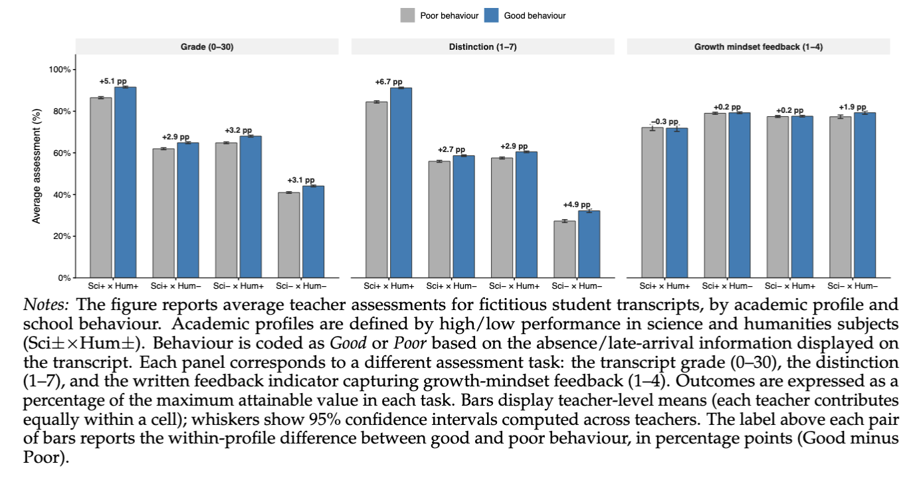
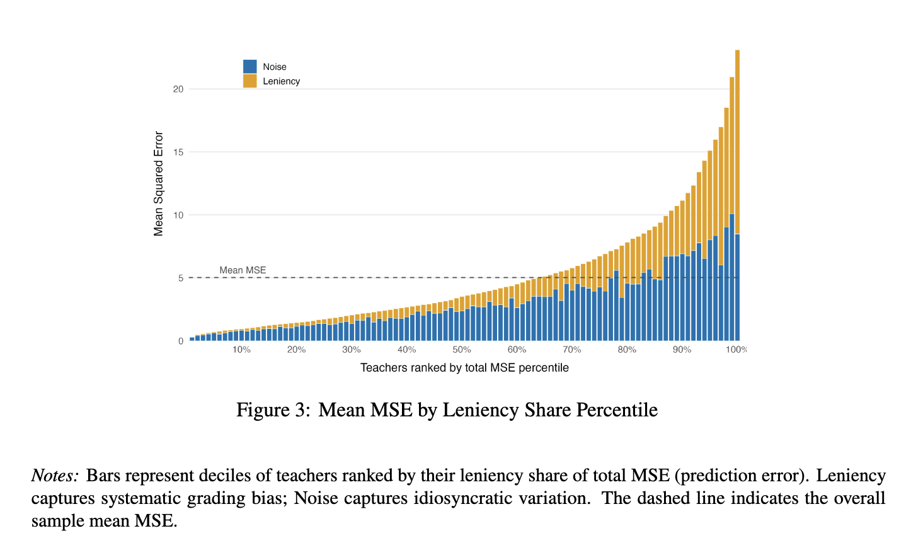

Research
Publications
-
Determinants of Gender Discrimination by Teachers: Evidence from an online experiment
with Marion Monnet (Burgundy) & Philippe Colo (Bern).
Conditionally accepted European Economic ReviewAbstract + figure
Abstract: This paper examines whether teachers’ gender biases stem from discrimination, and focuses on two of its potential drivers: gender preferences and beliefs. In an online experiment, 1,840 teachers evaluated fictitious transcripts with randomized gender information. Preferences were measured via dictator games, and beliefs through an Implicit Association Test. While teachers showed no gender preferences, they did hold gender beliefs. Analyzing 19,000 transcript evaluations, we find no evidence of gender-based discrimination. Our findings suggest that simply disclosing a student’s gender does not trigger discrimination, implying that such behaviours are more likely to emerge during direct student-teacher interactions.
Summarizing figure: Teachers’ Average Assigned Grade (0-30) by Transcript Profile and Gender

-
Human population behavioural traits matter for explaining terrestrial protected area coverage
Petit-Cailleux, C., Journé, V., & Dagorn, E. (2026). Human population behavioural traits matter for explaining terrestrial protected area coverage. Biological Conservation, 321, 111971.Abstract + figure
Abstract: Biodiversity loss demands urgent action, and protected areas are one of the cornerstones of biodiversity conservation measures. While conservation efforts are known to be driven by economic and political factors, there is an absence of literature addressing the potential role played by behavioural traits at the population level. We investigate how population-level behavioural traits influence the proportion of terrestrial protected areas by using large-scale cross-cultural surveys and geospatial data from 71 countries. We show that behavioural traits explain more variation in protected area coverage than economic indicators alone. Furthermore, trust is negatively associated with protected area coverage at the country level, suggesting that high-trust societies rely more on informal conservation practices. These findings challenge conventional models focused on economic and governance drivers and highlight the need for policies that align with population behaviours. Integrating behavioural insights into conservation planning could unlock more effective biodiversity conservation strategies in the era of environmental changes.
Summarizing figure: a/Maps of population behavioural traits value (trust, patience, risk-taking and altruism) for the 71 countries studied ; b/ Relationship between the protected area coverage (percentage) and behavioural traits

-
Social Pressure and Pro-social Behaviors Among Teenagers
Dagorn, E. (2026). Applied Economics, 1–17.Abstract + figure
Abstract: This study investigates the influence of social pressure on prosocial behaviors among adolescents through a lab-in-the-field experiment. Using a controlled environment where teenagers interact with their classmates, I examine the evolution of cooperation over repeated interactions and explore its determinants. I find that girls and altruistic pupils demonstrate higher levels of cooperation. The introduction of non-monetary rewards and punishments, serving as forms of social pressure, significantly enhances cooperation among adolescents, aligning their behavior with group’s cooperation. Surprisingly, the study finds that the intensity of social pressure does not directly impact cooperation, suggesting that adolescents adapt their pro-social behavior in response to social pressure awareness. This study demonstrates that peer-enforced norms sustain cooperation among adolescents, even in the absence of material incentives.
Summarizing figure: The figure displays the average contribution to the public good by periods. Periods 1 to 6 are the baseline, 7 to 12 are the (dis)approval treatment.

-
Shifting preferences: COVID-19 and higher education application
Dagorn, E., Meroni, E. C., & Moulin, L. (2025).
Applied Economics, 1-16.NoteAbstractThis study provides descriptive evidence on how the COVID-19 pandemic influenced secondary school students’ application patterns to higher education in France, offering insights into the reallocation of preferences across academic fields and degree types. Using detailed administrative data, we document significant shifts in application shares during 2021, with increased interest in competitive tracks and concurrent declines in applications to bachelor’s and vocational programs. These findings suggest that students responded to the pandemic by favouring structured and selective pathways with clear labour market prospects, moving away from generalist degrees. Students’ share of applications to STEM degrees increased, while applications to health and business programs remained stable. We then analyse the probability of applying to at least one program in a given field or degree and find a decline in application diversification: students narrowed their choices to fewer fields, reflecting a more risk-averse and selective approach in response to the pandemic. Our analysis highlights substantial heterogeneity in these effects across demographic groups.
-
The limits of behavioral nudges to increase youth turnout: Experimental evidence from two French elections
Romaniuc, R. et al. (2025).
Journal of Economic Behavior & Organization, 236, 107098.Abstract + figure
Abstract: There is a significant gap in turnout between young people and older voters. The failure to instill a voting habit at an early age may have long term consequences in terms of future political participation as well as on other civic behaviors. Using a pre-registered online experiment with 3790 subjects, we implemented behavioral interventions aiming to stimulate youth turnout in the 2022 French presidential election. We rely on an innovative incentive scheme to measure their consequences on (self-reported) actual voting behavior. We also provide evidence on the effect of one behavioral intervention on youth turnout in a less salient election, the French legislative election that took place two months after the Presidential one. The results from the two experiments show the absence of any differences in turnout between the baseline and the treatment conditions. We investigate several mechanisms that can explain our results.
Summarizing figure: Average turnout rates across conditions.

-
Altruism, Cooperativeness and Academic Achievement: A Lab in the Field Experiment in French Middle Schools
Dagorn, E., Masclet, D., & Penard, T. (2025).
Education Economics, 1-28.Abstract + figure
Abstract: In this exploratory study, we investigate how altruism and cooperativeness are related to educational achievement. We run a lab in the field experiment with pupils from Middle Schools in Brittany, France, to study whether altruism and cooperativeness are correlated with educational success. Contrary to expectation, we find no significant relationship between cooperativeness and educational performance. In contrast, altruism is negatively related to academic achievement, but this relationship is gender-driven, as it is only significant for boys.
Summarizing figure: Behavioral Traits and school achievement.

-
Dropping out of university in response to the COVID-19 pandemic
Dagorn, E., & Moulin, L. (2025). Economics of Education Review, 104, 102604.Abstract + figure
Abstract: This study empirically examines the impact of the COVID-19 pandemic on university students’ enrollment behaviors using a comprehensive database of university enrollments from 2012 to 2022. Our analysis reveals a 3.7% decline in the probability of re-enrollment for the subsequent academic year among the first cohort affected by the pandemic. This effect is particularly pronounced among students entering university, as well as among non-free lunch students, international students, and male students. The medium-term analysis indicates that the pandemic led to a significant shift in enrollment behaviors, decreasing the likelihood of enrolling in subsequent years and reducing graduation rates two years after the pandemic. Moreover, we find that exposure to stricter lockdown policies led to a 3.8% decrease in enrollment behaviors. We investigate three potential mechanisms: (i) exposure to the pandemic, (ii) labor market opportunities, and (iii) university quality. However, we find little evidence to support that these factors are significantly associated with changes in enrollment behaviors. These findings contribute to our understanding of the disruptive consequences of the COVID-19 pandemic on students’ educational trajectories and highlight its lasting impact on enrollment behaviors.
Summarizing figure: Enrollment behaviors between 2012 and 2020.

-
The role of populations’ behavioral traits in policy-making during a global crisis: Worldwide evidence
Dagorn, E., Dattilo, M., & Pourieux, M. (2024).
Journal of Economic Behavior & Organization, 226, 106662.Abstract + figure
Abstract: Substantial heterogeneity in behavioral traits has been observed across human societies, which have been linked to important differences in individual as well as societal outcomes. In this paper, we complement the existing literature by investigating the role of key behavioral traits, i.e. risk-taking, patience, altruism, and trust, at the population level in the design of new policies and institutions during an unexpected global crisis. Combining granular data on policy responses to the COVID-19 crisis with several pre-pandemic survey measures of behavioral traits in 109 countries, we observe robust relationships of significant magnitude. In particular, our findings underline that countries with higher levels of trust tended to respond later to the crisis; while populations that are patient, altruistic, and trusting are more likely to implement stringent policies in the medium and long-term. These results improve our understanding of how countries deal with global crises. They also supply an explanation for the lack of coordinated response at the international level during such events.
Summarizing figure: Responsiveness to the COVID-19 pandemic and populations’ behavioral traits

-
How Teachers Value School Behavior
Abstract + figure
Abstract: Teachers translate students’ academic records into grades, distinctions, and written evaluations that shape access to educational opportunities. We study how teachers value school behaviour using a large-scale online experiment with 1,840 French secondary-school teachers who evaluate realistic fictitious transcripts. Academic performance and behavioural indicators—absences and lateness—are independently randomized, allowing us to isolate the causal effect of behaviour while holding achievement fixed. Teachers reward behaviour substantially, but equally across student gender—suggesting behavioural grading is a source of inequality through conduct gaps, not differential treatment. Specifically, good behaviour raises assigned grades by 1.01 points (out of 30) and increases the likelihood of a favourable distinction by 0.28 points on a 7-point scale—equivalent to roughly 7% of the gap between low and high academic performers. Behaviour shapes assessments at all levels of academic performance, not only at the margin. Written feedback, however, is unaffected by behavioural signals. A complementary blind-transcript condition, in which student identity is concealed, yields similar behavioural rewards, indicating that our results reflect valuation of conduct rather than identity-driven inference.
Summarizing figure: Teachers’ Assessments by Academic Profile and School Behaviour

-
Knowledge is in the Air: Air Pollution and Early Educational Development
Working Papers
Teachers’ Leniency: Experimental Evidence
with Isaac Parkes (LSE) & Alberto Prati (UCL)
LSE-CEP Discussion Paper
Preprint
Abstract + figure
Abstract: Two teachers grading the same student can disagree substantially, but the sources of this variation remain unclear. We study this using a large-scale online experiment in which over 1,600 French secondary-school teachers independently graded fictitious student transcripts. With hundreds of ratings per transcript, we decompose variation into transcript and teacher components. Conditional on transcript fixed effects, teacher leniency explains about 40% of residual grade variance. Leniency is largely unrelated to gender, subject, teaching style, or job satisfaction, but is associated with altruism and age. Teachers often perceive themselves as more lenient than colleagues, yet tolerate more disagreement than we observe.
Summarizing figure: Teachers’ leniency and noise in grading practices.

Work in Progress
Other Publications
Les expériences sur les préférences individuelles et sociales des enfants et des adolescents : une revue de la littérature
avec David Masclet et Thierry Penard.
À paraître dans un ouvrage collectif dirigé par Marc Willinger, Charles Figuières et Adda Benslimane.
Abstract + figure
L’objectif de cet article est de proposer une revue de la littérature des expériences en économie menées auprès d’enfants et d’adolescents. Ces expériences, principalement conduites en laboratoire sur le terrain (« lab in the field »), permettent d’étudier les préférences et les décisions de populations plus jeunes et plus hétérogènes que celles habituellement mobilisées dans les expériences expérimentales classiques, souvent réalisées auprès d’étudiants. Les principaux enseignements de cette littérature montrent que les préférences individuelles et sociales — telles que l’aversion au risque, la coopération ou l’altruisme — évoluent avec l’âge. Ces résultats soulignent l’importance d’adapter les politiques publiques ciblant les enfants et les adolescents en tenant compte des spécificités de leurs préférences.
Reproducibility in Management Science
Abstract + figure
Abstract: With the help of more than 700 reviewers, we assess the reproducibility of nearly 500 articles published in the journal Management Science before and after the introduction of a new Data and Code Disclosure policy in 2019. When considering only articles for which data accessibility and hardware and software requirements were not an obstacle for reviewers, the results of more than 95% of articles under the new disclosure policy could be fully or largely computationally reproduced. However, for 29% of articles, at least part of the data set was not accessible to the reviewer. Considering all articles in our sample reduces the share of reproduced articles to 68%. These figures represent a significant increase compared with the period before the introduction of the disclosure policy, where only 12% of articles voluntarily provided replication materials, of which 55% could be (largely) reproduced. Substantial heterogeneity in reproducibility rates across different fields is mainly driven by differences in data set accessibility. Other reasons for unsuccessful reproduction attempts include missing code, unresolvable code errors, weak or missing documentation, and software and hardware requirements and code complexity. Our findings highlight the importance of journal code and data disclosure policies and suggest potential avenues for enhancing their effectiveness.
:::
:::::
:::::::::::::
:::::::::::::::
::::::::::::::::::
::::::::::::::::::::
:::::::::::::::::::::
:::::::::::::::::::::::
::::::::::::::::::::::::
::::::::::::::::::::::::::
:::::::::::::::::::::::::::
:::::::::::::::::::::::::::::
:::::::::::::::::::::::::::::::::
:::::::::::::::::::::::::::::::::::
::::::::::::::::::::::::::::::::::::
::::::::::::::::::::::::::::::::::::::